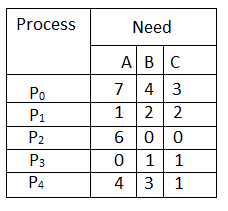
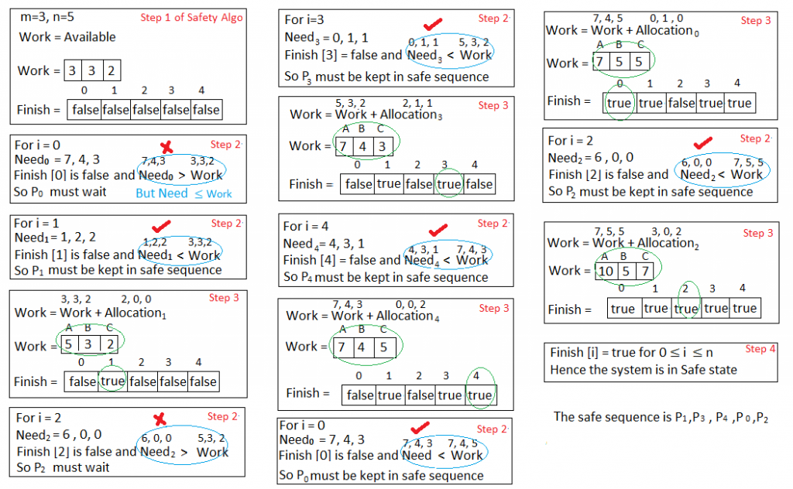
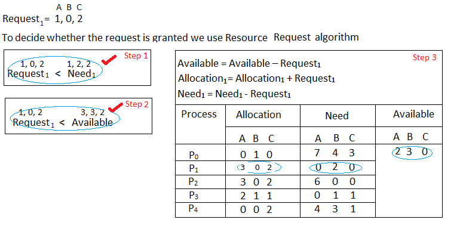
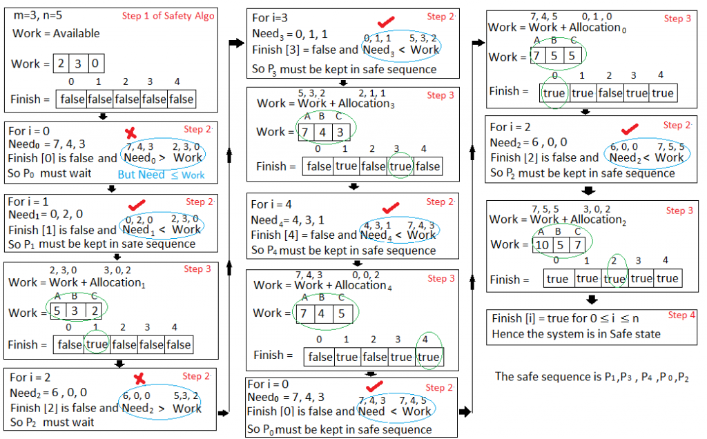

<?xml version="1.0" encoding="utf-8"?>
<!DOCTYPE html PUBLIC "-//W3C//DTD XHTML 1.1//EN"
  "http://www.w3.org/TR/xhtml11/DTD/xhtml11.dtd">

<html xmlns="http://www.w3.org/1999/xhtml">
<head><title></title>
<link href="../../../styles/ebook.css" type="text/css" rel="stylesheet"/>
</head>
<body>
<header class="entry-header">
						<h1 class="entry-title"> Banker’s Algorithm</h1>
				
						</header>
<!-- .entry-header -->
				<div class="entry-content">
			<p>The banker’s algorithm is a resource allocation and deadlock avoidance algorithm that tests for safety by simulating the allocation for predetermined maximum possible amounts of all resources, then makes an “s-state” check to test for possible activities, before deciding whether allocation should be allowed to continue.</p>
<p>Following <strong>Data structures</strong> are used to implement the Banker’s Algorithm:</p>
<p>Let <strong>‘n’ </strong>be the number of processes in the system and&#160;<strong>‘m’ </strong>be the number of resources types.</p>
<p><strong>Available :&#160;</strong></p>
<ul>
<li>It is a 1-d array of size <strong>‘m’</strong> indicating the number of available resources of each type.</li>
<li>Available[ j ] = k means there are <strong>‘k’</strong> instances of resource type <strong>R<sub>j</sub></strong></li>
</ul>
<p><strong>Max :</strong></p>
<br/>
        
          <!-- post_top_responsive -->
          <ins class="adsbygoogle" style="display:block" data-ad-client="ca-pub-9465609616171866" data-ad-slot="4501693235" data-ad-format="auto"></ins>
          
        <br/>
            
<ul>
<li>It is a 2-d array of size ‘<strong>n*m’ </strong>that defines the maximum demand of each process in a system.</li>
<li>Max[ i, j ] = k means process <strong>P<sub>i</sub></strong> may request at most <strong>‘k’</strong> instances of resource type <strong>R<sub>j.</sub></strong></li>
</ul>
<p><strong>Allocation :</strong></p>
<ul>
<li>It is a 2-d array of size<strong> ‘n*m’ </strong>that defines the number of resources of each type currently allocated to each process.</li>
<li>Allocation[ i, j ] = k means process <strong>P<sub>i</sub></strong> is currently allocated <strong>‘k’</strong> instances of resource type <strong>R<sub>j</sub></strong></li>
</ul>
<p><strong>Need :</strong></p>
<ul>
<li>&#160;It is a 2-d array of size <strong>‘n*m’</strong> that indicates the remaining resource need of each process.</li>
<li>Need [ i,&#160; j ] = k means process <strong>P<sub>i</sub></strong> currently allocated <strong>‘k’</strong> instances of resource type <strong>R<sub>j</sub></strong></li>
<li>Need [ i,&#160; j ] = Max [ i,&#160; j ] – Allocation [ i,&#160; j ]</li>
</ul>
<p>Allocation<sub>i</sub> specifies the resources currently allocated to process P<sub>i</sub> and Need<sub>i</sub> specifies the additional resources that process P<sub>i</sub> may still request to complete its task.</p>
<p>Banker’s algorithm consist of Safety algorithm and Resource request algorithm</p>
<p><b><span style="font-family: arial,helvetica,sans-serif">Safety Algorithm</span></b></p>
<p>The algorithm for finding out whether or not a system is in a safe state can be described as follows:</p>
<blockquote><p>
1) Let Work and Finish be vectors of length ‘m’ and ‘n’ respectively.<br/>
Initialize: Work = Available<br/>
Finish[i] = false; for i=1, 2, 3, 4….n</p>
<p></p>
<p>2) Find an i such that both<br/>
a) Finish[i] = false<br/>
b) Need<sub>i</sub> &lt;= work="" if="" no="" such="" i="" exists="" goto="" step="" (4)="" &lt;="" p=""&gt;
</p>
<p>3) Work = Work + Allocation<br/>
Finish[i] = true<br/>
goto step (2)</p>
<p></p>
<p>4) if finish [i] = true for all i<br/>
then the system is in a safe state
</p>
<!--=--><p></p>
</blockquote>
<p></p>
<p><strong>Resource-Request Algorithm</strong></p>
<p>Let Request<sub>i</sub> be the request array for process P<sub>i</sub>. Request<sub>i </sub>[j] = k means process P<sub>i</sub> wants k instances of resource type R<sub>j</sub>. When a request for resources is made by process P<sub>i</sub>, the following actions are taken:</p>
<blockquote>
<p>1) If Request<sub>i</sub> &lt;= need<sub="">i<br/>
Goto step (2) ; otherwise, raise an error condition, since the process has exceeded its maximum claim.<!--=--></sub=""></p>
<p></p>
<p>2) If Request<sub>i</sub> &lt;= available="" goto="" step="" (3);="" otherwise,="" p<sub="">i must wait, since the resources are not available.<!--=--></sub=""></p>
<p></p>
<p>3) Have the system pretend to have allocated the requested resources to process Pi by modifying the state as<br/>
follows:<br/>
Available = Available – Requesti<br/>
Allocation<sub>i</sub> = Allocation<sub>i</sub> + Request<sub>i</sub><br/>
Need<sub>i</sub> = Need<sub>i</sub>– Request<sub>i</sub></p>
</blockquote>
<p></p>
<p><strong>Example:</strong></p>
<p><strong>Considering a system with five processes P<sub>0</sub> through P<sub>4</sub> and three resources types A, B, C. Resource type A has 10 instances, B has 5 instances and type C has 7 instances. Suppose at time t<sub>0</sub> following snapshot of the system has been taken:</strong></p>
<p><a href="https://www.geeksforgeeks.org/wp-content/uploads/gq/2016/01/safety.png"></a></p>
<p><strong>Question1.&#160;What will be the content of the Need matrix?</strong></p>
<p>Need [i, j] = Max [i, j] – Allocation [i, j]</p>
<p>So, the content of Need Matrix is:</p>
<p><a href="https://www.geeksforgeeks.org/wp-content/uploads/gq/2016/01/unnamed.png"></a></p>
<p><strong>Question2.&#160; Is the system in safe state? If Yes, then what is the safe sequence?</strong></p>
<p>Applying the Safety algorithm on the given system,</p>
<p><a href="https://www.geeksforgeeks.org/wp-content/uploads/gq/2016/01/questionsolved.png"></a></p>
<p><strong>Question3. What will happen if process&#160;P<sub>1&#160;</sub>requests one additional instance of resource type A and two instances of resource type C?</strong></p>
<p><a href="https://www.geeksforgeeks.org/wp-content/uploads/gq/2016/01/Allocation.png"></a></p>
<p>We must determine whether this new system state is safe. To do so, we again execute Safety algorithm on the above data structures.</p>
<p><a href="https://www.geeksforgeeks.org/wp-content/uploads/gq/2016/01/Q31.png"></a></p>
<p>Hence the new system state is safe, so we can immediately grant the request for process&#160;<strong>&#160;P<sub>1 .</sub></strong></p>
<p><strong>GATE question:</strong><br/>
<strong><a href="http://quiz.geeksforgeeks.org/gate-gate-cs-2014-set-1-question-41/">http://quiz.geeksforgeeks.org/gate-gate-cs-2014-set-1-question-41/</a></strong></p>
<p><strong>Reference:</strong><br/>
Operating System Concepts 8th Edition by Abraham Silberschatz, Peter B. Galvin, Greg Gagne </p>
          <!-- post_bottom_responsive -->
          <ins class="adsbygoogle" style="display:block" data-ad-client="ca-pub-9465609616171866" data-ad-slot="8385097921" data-ad-format="auto"></ins>
          
            <br/><br/>
					
		
<!-- .entry-meta -->	</div>
</body>
</html>